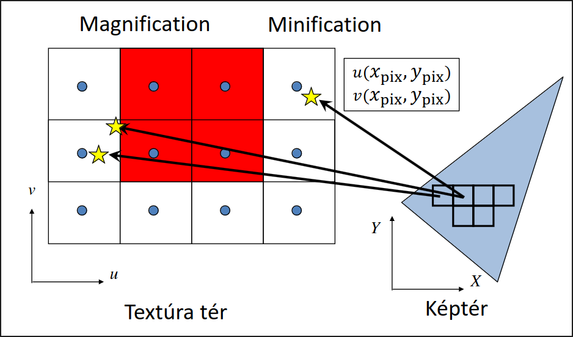

2D Textúrázás
2D textúrát szeretnénk ráragasztani egy alakzatra, kell egy megfeleltetés hogy adott pixelekhez a textúra melyik texele (textúra pixele) tartozik.
Textúraszűrés
Adott pixelközéppontra megcsináljuk a lineáris leképezést, megnézzük textúratérben hol lenne \(\Rightarrow\) UV koordináta a textúratérben
Nearest neighbor szűrés
A UV koordináták alapján megkeressük a hozzá legközelebbi texelt, és az lesz a pixel színe.
Eredmény: éles textúra, látható pixelek

// külön állíthatjuk a szűrést kicsinyítés illetve nagyítás esetén
glTexParameteri(GL_TEXTURE_2D,GL_TEXTURE_MAG_FILTER,GL_NEAREST);
glTexParameteri(GL_TEXTURE_2D,GL_TEXTURE_MIN_FILTER,GL_NEAREST);
Mip-map
Probléma: Minification esetén a pixel kiterjedése a textúrán egy nagyobb területet fed ezáltal több texelt is lefed. Mi viszont csak a pixel középpontjához leközelebb eső egyetlen texelt vesszük figyelembe. Ez zajos, pontatlan képeket eredményez.
Megoldás: Mip-mapok, előre lekicsinyítjük a textúrát, minifikáció mértéke alapján különböző mip-map szinten keressük a texelt. Mivel a kicsinyített textúrában kisebb az eltérés az egy pixel és az egy texel által fedett terület között, ezért egy pontosabb színt kapunk.
(A mip-mapokat a GPU generálja, szintenként negyedakkora lesz a textúra, előre kiszámolja 4 pixel átlagszínét)
glTexParameteri(GL_TEXTURE_2D, GL_TEXTURE_MIN_FILTER, GL_LINEAR_MIPMAP_NEAREST); // Mip-mapping
glTexParameteri(GL_TEXTURE_2D, GL_TEXTURE_MIN_FILTER, GL_LINEAR_MIPMAP_LINEAR); // Tri-linear filtering
Bilineáris szűrés
A pixelünk UV koordinátája általában nem esik egyértelműen egy texelre. Bilineáris szűrésnél az UV koordinátát közrefogó 4 texelt vesszük figyelembe, és azok színeinek vesszük súlyozott átlagát \(\Rightarrow\) színátmenetes lesz pixeles helyett.

Azért bilinear, mert 2 lineáris szűrést csinálunk, vízszintesen, majd függőlegesen. Igen, valójában 3 átlagot számolunk, de ez nem ugyan az, mint a lineáris szűrés.
glTexParameteri(GL_TEXTURE_2D, GL_TEXTURE_MIN_FILTER, GL_LINEAR);
glTexParameteri(GL_TEXTURE_2D, GL_TEXTURE_MAG_FILTER, GL_LINEAR);
Textúrázás a GPU-n

Textúra feltöltése a GPU-ra
glGenTextures(1, &textureId);
glBindTexture(GL_TEXTURE_2D, textureId); // binding
glTexImage2D(GL_TEXTURE_2D, 0, GL_RGBA, width, height, 0, GL_RGBA, GL_FLOAT, &image[0]); //Texture -> GPU
glTexParameteri(GL_TEXTURE_2D, GL_TEXTURE_MIN_FILTER, GL_NEAREST);
glTexParameteri(GL_TEXTURE_2D, GL_TEXTURE_MAG_FILTER, GL_LINEAR);
Objektumok felszerelése textúra (UV) koordinátákkal
Minden csúcsnak eltároljuk a hozzá tartozó UV koordinátáját. (UV koordináta mondja meg, hogy adott csúcs a textúra mely pontjának felel meg.) Ezt több féle képpen lehet, pl. stride (ugyan abban a VBO-ban, egymás után felváltva koordináták és uv koordináták) vagy külön VBO-ban (de ugyan abban a VAO-ban).
Utóbbira (külön VBO) példa:
glGenVertexArrays(1, &vao);
glBindVertexArray(vao);
glGenBuffers(2, vbo);// Generate 2 vertex buffer objects
// vertex coordinates: vbo[0] -> Attrib Array 0 -> vertices
glBindBuffer(GL_ARRAY_BUFFER, vbo[0]);
float vtxs[] = {x1, y1, x2, y2, …};
glBufferData(GL_ARRAY_BUFFER, sizeof(vtxs),vtxs, GL_STATIC_DRAW);
glEnableVertexAttribArray(0);
glVertexAttribPointer(0, 2, GL_FLOAT, GL_FALSE, 0, NULL);
// vertex coordinates: vbo[1] -> Attrib Array 1 -> uvs
glBindBuffer(GL_ARRAY_BUFFER, vbo[1]);
float uvs[] = {u1, v1, u2, v2, …};
glBufferData(GL_ARRAY_BUFFER, sizeof(uvs), uvs, GL_STATIC_DRAW);
glEnableVertexAttribArray(1);
glVertexAttribPointer(1, 2, GL_FLOAT, GL_FALSE, 0, NULL);
Vertex és pixel shader
Vertex shader:
// a két bemeneti regiszterében kapja meg a poziíciót és az UV koordinátát
layout(location = 0) in vec2 vtxPos;
layout(location = 1) in vec2 vtxUV;
// a kimenet egyetlen textúra koordináta
out vec2 texcoord;
void main() {
gl_Position = vec4(vtxPos, 0, 1) * MVP;
texcoord = vtxUV;
...
}
Ennek kimenetét kapja meg a pixel shader:
uniform sampler2D samplerUnit;
// a pixelshader bemenete
in vec2 texcoord;
out vec4 fragmentColor;
void main() {
// a megfelelő sampler és a textúrakoordináta segítségével kiszámolja a megjelenítendő színt
fragmentColor = texture(samplerUnit, texcoord);
}
Megértést segítő videó
Kvíz
1. glTexParameteri(GL_TEXTURE_2D, melyik, milyen) OpenGL függvényre vonatkozóan válasszuk ki az alábbi állítások közül az igaz állításokat.
- A milyen=GL_LINEAR esetén a textúrázandó képnek csak a 0-as szintjét kell feltölteni.
- A milyen=GL_NEAREST-nél nagyításnál, és kicsinyítésnél is van jobb megoldás. (mi számít jobbnak...)
- A milyen=GL_LINEAR bi-lineáris interpolációt kapcsol be.
- A milyen=GL_LINEAR esetén a rajzolás négyszer lassabb, mint a milyen=GL_NEAREST-nél
- A milyen=GL_LINEAR_MIPMAP_NEAREST mindig jó, ha a textúrát a egyetlen
glTexImage2D(GL_TEXTURE_2D, 0, GL_RGBA, width, height, 0, GL_RGBA, GL_FLOAT, &image[0]);hívással töltöttük fel a textúrát.
Megoldás
- A milyen=GL_LINEAR esetén a textúrázandó képnek csak a 0-as szintjét kell feltölteni.
- A milyen=GL_NEAREST-nél nagyításnál, és kicsinyítésnél is van jobb megoldás. (mi számít jobbnak...)
- A milyen=GL_LINEAR bi-lineáris interpolációt kapcsol be.
- A milyen=GL_LINEAR esetén a rajzolás négyszer lassabb, mint a milyen=GL_NEAREST-nél
- A milyen=GL_LINEAR_MIPMAP_NEAREST mindig jó, ha a textúrát a egyetlen
glTexImage2D(GL_TEXTURE_2D, 0, GL_RGBA, width, height, 0, GL_RGBA, GL_FLOAT, &image[0]);hívással töltöttük fel a textúrát.
2. Jelöljük be az glTexImage2D(target, 0, GL_RGBA, w, h, 0, GL_RGBA, GL_FLOAT, address); utasítással kapcsolatos igaz állításokat.
- Az address azon CPU memóriaterület kezdőcíme, ahonnan a GPU-ra az adatokat átmásoljuk.
- A target lehet GL_TEXTURE_2D, ami azt jelenti, hogy az utoljára a GL_TEXTURE_2D-hez bindolt textúrát töltjük éppen fel. (mást is fel lehet tölteni pl normalmap)
- A glTexImage2D függvénnyel kell feltölteni akkor is a textúrát, ha mip-map-elést szeretnénk, de többször kell meghívni ezt a függvényt. (miért kéne többször??? nem gpu generál neked mipmapet what?)
- A GL_FLOAT utolsó előtti paraméter az írja elő, hogy a GPU memóriában a texelek lebegőpontos formátumban tárolódjanak. (nem, mert a színeket fogja ilyen típusban tárolni (miért tárolnád floatban na mindegy))
- A w és h paraméterek csak 2 hatványok lehetnek. (nem)
- Az OpenGL-nek nem lehet unsigned char textúrákat átadni. (lehet csak elég retro lesz)
- A harmadik, GL_RGBA paraméter azt fejezi ki, hogy a feltöltendő tömbben egy texelt a három színcsatornán és átlátszósággal adunk meg. (nem a feltöltendő tömbbre vonatkozik hanem a képre amit megadsz neki)
- A második, 0 paraméter azt jelenti, hogy a texelek hézagmentesen vannak a textúrában. (a textúra (mipmap) szintjét jelenti)
Megoldás
- Az address azon CPU memóriaterület kezdőcíme, ahonnan a GPU-ra az adatokat átmásoljuk.
- A target lehet GL_TEXTURE_2D, ami azt jelenti, hogy az utoljára a GL_TEXTURE_2D-hez bindolt textúrát töltjük éppen fel. (mást is fel lehet tölteni pl normalmap)
- A glTexImage2D függvénnyel kell feltölteni akkor is a textúrát, ha mip-map-elést szeretnénk, de többször kell meghívni ezt a függvényt. (miért kéne többször??? nem gpu generál neked mipmapet what?)
- A GL_FLOAT utolsó előtti paraméter az írja elő, hogy a GPU memóriában a texelek lebegőpontos formátumban tárolódjanak. (nem, mert a színeket fogja ilyen típusban tárolni (miért tárolnád floatban na mindegy))
- A w és h paraméterek csak 2 hatványok lehetnek. (nem)
- Az OpenGL-nek nem lehet unsigned char textúrákat átadni. (lehet csak elég retro lesz)
- A harmadik, GL_RGBA paraméter azt fejezi ki, hogy a feltöltendő tömbben egy texelt a három színcsatornán és átlátszósággal adunk meg. (nem a feltöltendő tömbbre vonatkozik hanem a képre amit megadsz neki)
- A második, 0 paraméter azt jelenti, hogy a texelek hézagmentesen vannak a textúrában. (a textúra (mipmap) szintjét jelenti)
3. Tekintsük az alábbi pixel shader programot:
uniform sampler2D samplerUnit;
in vec2 texcoord;
out vec4 fragmentColor;
void main() {
fragmentColor = texture(samplerUnit, texcoord);
}
glTexParameteri(GL_TEXTURE_2D, GL_TEXTURE_MIN_FILTER, GL_NEAREST); beállítás és glTexParameteri(GL_TEXTURE_2D, GL_TEXTURE_MAG_FILTER, GL_LINEAR); beállításnál is.
- A samplerUnit változót értékét a glGenTextures függvénnyel kell létrehozni.
- A texture(samplerUnit, texcoord) azon texel színét adja vissza mindig, amelyhez a texcoord a legközelebb van. (mindig redflag, samplertől függ)
- A fragmentColor változó w mezője automatikusan 1 értékű lesz. (neeem általában ez az alpha csatorna és külön értéke lesz ugyan úgy)
Megoldás
- A program változatlanul használható
glTexParameteri(GL_TEXTURE_2D, GL_TEXTURE_MIN_FILTER, GL_NEAREST);beállítás ésglTexParameteri(GL_TEXTURE_2D, GL_TEXTURE_MAG_FILTER, GL_LINEAR);beállításnál is. - A samplerUnit változót értékét a glGenTextures függvénnyel kell létrehozni.
- A texture(samplerUnit, texcoord) azon texel színét adja vissza mindig, amelyhez a texcoord a legközelebb van. (mindig redflag, samplertől függ)
- A fragmentColor változó w mezője automatikusan 1 értékű lesz. (neeem általában ez az alpha csatorna és külön értéke lesz ugyan úgy)
4. Egy háromszög három csúcsa a modellezési koordinátarendszerben, valamint a textúra térben:
Modell koordináták | Textúra koordináták
\((0,0, -1)\) | \((0,0)\) \((0,1,-0.5)\) | \((0,1)\) \((1,0,-0.5)\) | \((1,0)\)
Az MVP transzformációs mátrix: $$ T = \begin{bmatrix} 1 & 0 & 0 & 0 \newline 0 & 1 & 0 & 0 \newline 0 & 0 & 1 & 1 \newline 0 & 0 & -1 & 0 \newline \end{bmatrix} $$
Hogyan függ az \(x_{\text{pix}}\), \(y_{\text{pix}}\) a textúrakoordinátától, ha glViewport(0, 0, 1000, 1000)-t hívtunk?
Megoldás
Idézzük fel, hogy $$ \begin{align*} x_{\text{modell}} &= a_x \cdot u + b_x \cdot v + c_x \newline y_{\text{modell}} &= a_y \cdot u + b_y \cdot v + c_y \newline z_{\text{modell}} &= a_z \cdot u + b_z \cdot v + c_z \end{align*} $$
A megadott koordinátákat behelyettesítve:
-
\((0,0,-1) \rightarrow (0,0)\) $$ \begin{align*} 0 &= a_x \cdot 0 + b_x \cdot 0 + c_x \Rightarrow c_x = 0 \newline 0 &= a_y \cdot 0 + b_y \cdot 0 + c_y \Rightarrow c_y = 0 \newline -1 &= a_z \cdot 0 + b_z \cdot 0 + c_z \Rightarrow c_z = -1 \end{align*} $$
-
\((0,1,-0.5) \rightarrow (0,1)\) $$ \begin{align*} 0 &= a_x \cdot 0 + b_x \cdot 1 + c_x \Rightarrow b_x = 0 \newline 1 &= a_y \cdot 0 + b_y \cdot 1 + c_y \Rightarrow b_y = 1 \newline -0.5 &= a_z \cdot 0 + b_z \cdot 1 + c_z \Rightarrow b_z = 0.5 \end{align*} $$
-
\((1,0,-0-5) \rightarrow (1,0)\) $$ \begin{align*} 1 &= a_x \cdot 1 + b_x \cdot 0 + c_x \Rightarrow a_x = 1 \newline 0 &= a_y \cdot 1 + b_y \cdot 0 + c_y \Rightarrow a_y = 0 \newline -0.5 &= a_z \cdot 1 + b_z \cdot 0 + c_z \Rightarrow a_z = 0.5 \end{align*} $$
Összegezve:
Tudjuk, hogy
illetve
Elvégezve a mátrix szorzást és a homogén osztást, azt kapjuk, hogy
A legutolsó lépés a viewport transzformáció:
Mivel glViewport(0, 0, 1000, 1000)-t hívtunk, ezért \(v_x = v_y = 0\) és \(v_w = v_h = 1000\).
Behelyettesítve, és a kvíz által kért alakra hozva: